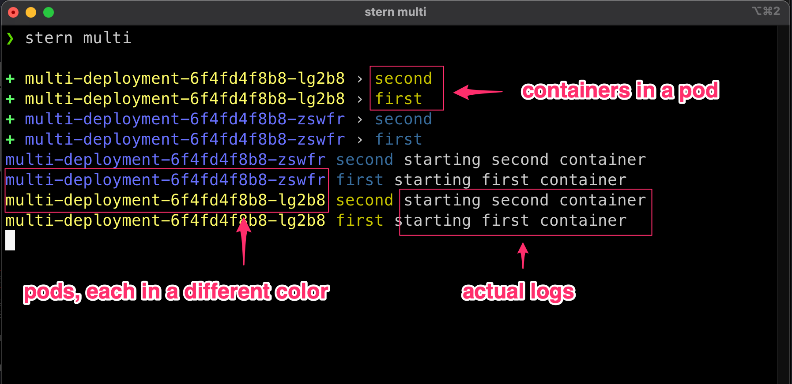

Stern¶
Stern allows you to tail multiple pods on Kubernetes and multiple containers within the pod. Each result is color coded for quicker debugging.
Install¶
Warning
Note that the original Stern repo was forked at https://github.com/stern/stern as the other one is not maintained anymore.
Dumping the logs with kubectl¶
First let's add a new deployment which generate some logs:
cat > multi-deployment.yaml << EOF
apiVersion: apps/v1
kind: Deployment
metadata:
labels:
app: multi-deployment
name: multi-deployment
namespace: default
spec:
replicas: 2
revisionHistoryLimit: 10
selector:
matchLabels:
app: multi-deployment
template:
metadata:
labels:
app: multi-deployment
spec:
containers:
- image: alpine:latest
imagePullPolicy: Always
name: first
command: ["/bin/sh", "-c"]
args:
- echo "starting first container";
tail -f /dev/null
- image: alpine:latest
imagePullPolicy: Always
name: second
command: ["/bin/sh", "-c"]
args:
- echo "starting second container";
tail -f /dev/null
EOF
k apply -n default -f multi-deployment.yaml
Two new pods are created, each with two containers:
NAME READY STATUS RESTARTS AGE
multi-deployment-6f4fd4f8b8-lg2b8 2/2 Running 0 4m52s
multi-deployment-6f4fd4f8b8-vnqbx 2/2 Running 0 4m49s
Here is a command to access the logs:
Defaulted container "first" out of: first, second
Defaulted container "first" out of: first, second
starting first container
starting first container
kubectl is complaining that our pods have multiple containers, and is only dumping the logs from the first one.
Using the --all-containers argument allows to dump them all:
starting first container
starting second container
starting first container
starting second container
As you can see, there's multiple things to complain about:
- it's not easy to read
- it is based on
labelselectors - you have to select one container if there are many in the pod
- when dumping all containers, we have no idea which one logged what
- we have to select a namespace or use the current one
Warning
By default, kubectl logs displays the logs and stop. The --follow (-f) option must be set to tail the logs .
Using Stern¶
Stern is a small app that extend how logs are dumped, adding the name of the pod, the container inside the pod, and using colors to differentiate which is which. It also add an easier way to select the pods to display.
stern does not have to use label selectors (but you can). By default it use the argument as a regular-expression to search for matching pods. Ex:
+ multi-deployment-6f4fd4f8b8-vnqbx › first
+ multi-deployment-6f4fd4f8b8-vnqbx › second
+ multi-deployment-6f4fd4f8b8-lg2b8 › second
+ multi-deployment-6f4fd4f8b8-lg2b8 › first
multi-deployment-6f4fd4f8b8-lg2b8 second starting second container
multi-deployment-6f4fd4f8b8-vnqbx second starting second container
multi-deployment-6f4fd4f8b8-lg2b8 first starting first container
multi-deployment-6f4fd4f8b8-vnqbx first starting first container
Here's a detailed explanation:

Stern is really versatile, and here are some command examples, based on the previous multi-deployment logs:
-
search pods per labels (as with
k logs)output- search pods in all namespaces+ multi-deployment-6f4fd4f8b8-vnqbx › first + multi-deployment-6f4fd4f8b8-vnqbx › second + multi-deployment-6f4fd4f8b8-lg2b8 › second + multi-deployment-6f4fd4f8b8-lg2b8 › first multi-deployment-6f4fd4f8b8-lg2b8 second starting second container multi-deployment-6f4fd4f8b8-vnqbx second starting second container multi-deployment-6f4fd4f8b8-lg2b8 first starting first container multi-deployment-6f4fd4f8b8-vnqbx first starting first containeroutput- Exclude some logs with a matching pattern+ multi-deployment-6f4fd4f8b8-vnqbx › first + multi-deployment-6f4fd4f8b8-vnqbx › second + multi-deployment-6f4fd4f8b8-lg2b8 › second + multi-deployment-6f4fd4f8b8-lg2b8 › first multi-deployment-6f4fd4f8b8-lg2b8 second starting second container multi-deployment-6f4fd4f8b8-vnqbx second starting second container multi-deployment-6f4fd4f8b8-lg2b8 first starting first container multi-deployment-6f4fd4f8b8-vnqbx first starting first containeroutput- Tail only the latest logs (drop old logs)+ multi-deployment-6f4fd4f8b8-zswfr › first + multi-deployment-6f4fd4f8b8-zswfr › second + multi-deployment-6f4fd4f8b8-lg2b8 › second + multi-deployment-6f4fd4f8b8-lg2b8 › first multi-deployment-6f4fd4f8b8-lg2b8 first starting first container multi-deployment-6f4fd4f8b8-zswfr first starting first containeroutput- Tail logs in Json+ coredns-6d4b75cb6d-plpj9 › coredns + coredns-6d4b75cb6d-cw498 › coredns coredns-6d4b75cb6d-cw498 coredns linux/amd64, go1.17.1, 13a9191 coredns-6d4b75cb6d-plpj9 coredns linux/amd64, go1.17.1, 13a9191This is great as you can use
jqto pretty-print the logs, or apply some complexjsonfiltering:Note
The real log message is in the
messagefield, and is encoded. In the case your logs are already JSON, they will be double-encoded, and not pure JSON.The latest version of Stern (
1.22.0or newer) inclused two other--ouptputmodes: -extjsonThis is an extended JSON output, used when your logs are already JSON. In this case, they will not be double-encoded. -ppextjsonThis is the same as above but keeping the stern colors to identify pods and adding pretty-print indentation so it not necessary to usejqHere is an updated deployment that logs in json:
cat > multi-deployment.yaml << EOF apiVersion: apps/v1 kind: Deployment metadata: labels: app: multi-deployment name: multi-deployment namespace: default spec: replicas: 1 revisionHistoryLimit: 10 selector: matchLabels: app: multi-deployment template: metadata: labels: app: multi-deployment spec: containers: - image: alpine:latest imagePullPolicy: Always name: first command: ["/bin/sh", "-c"] args: - echo '{"level":"info","message":"starting","container":"first"}'; sleep 5; echo '{"level":"warn","message":"something is not quite right","container":"first"}'; tail -f /dev/null - image: alpine:latest imagePullPolicy: Always name: second command: ["/bin/sh", "-c"] args: - echo '{"level":"info","message":"starting","container":"second"}'; sleep 2; echo '{"level":"warn","message":"Redrum. Redrum. REDRUM!","container":"second"}'; tail -f /dev/null EOF k apply -n default -f multi-deployment.yamldumping the logs in
jsonformat still encodes the real logs as amessage:output+ multi-deployment-6f9fb8c49d-l4tzx › second + multi-deployment-6f9fb8c49d-l4tzx › first { "message": "{\"level\":\"info\",\"message\":\"starting\",\"container\":\"second\"}", "nodeName": "demo-worker", "namespace": "default", "podName": "multi-deployment-6f9fb8c49d-l4tzx", "containerName": "second" } { "message": "{\"level\":\"warn\",\"message\":\"Redrum. Redrum. REDRUM!\",\"container\":\"second\"}", "nodeName": "demo-worker", "namespace": "default", "podName": "multi-deployment-6f9fb8c49d-l4tzx", "containerName": "second" } { "message": "{\"level\":\"info\",\"message\":\"starting\",\"container\":\"first\"}", "nodeName": "demo-worker", "namespace": "default", "podName": "multi-deployment-6f9fb8c49d-l4tzx", "containerName": "first" } { "message": "{\"level\":\"warn\",\"message\":\"something is not quite right\",\"container\":\"first\"}", "nodeName": "demo-worker", "namespace": "default", "podName": "multi-deployment-6f9fb8c49d-l4tzx", "containerName": "first" }Stern can now dump real
jsonwhen you already havejsonlogs by using theextjsonoutput:output+ multi-deployment-6f9fb8c49d-l4tzx › second + multi-deployment-6f9fb8c49d-l4tzx › first { "pod": "multi-deployment-6f9fb8c49d-l4tzx", "container": "first", "message": { "level": "info", "message": "starting", "container": "first" } } { "pod": "multi-deployment-6f9fb8c49d-l4tzx", "container": "first", "message": { "level": "warn", "message": "something is not quite right", "container": "first" } } { "pod": "multi-deployment-6f9fb8c49d-l4tzx", "container": "second", "message": { "level": "info", "message": "starting", "container": "second" } } { "pod": "multi-deployment-6f9fb8c49d-l4tzx", "container": "second", "message": { "level": "warn", "message": "Redrum. Redrum. REDRUM!", "container": "second" } }This is far more readable.
The last
sternoption is theppextjsonjson, which will pretty-print and colorize the output so it is not needed to usejq:output+ multi-deployment-6f9fb8c49d-l4tzx › second + multi-deployment-6f9fb8c49d-l4tzx › first { "pod": "multi-deployment-6f9fb8c49d-l4tzx", "container": "second", "message": {"level":"info","message":"starting","container":"second"} } { "pod": "multi-deployment-6f9fb8c49d-l4tzx", "container": "second", "message": {"level":"warn","message":"Redrum. Redrum. REDRUM!","container":"second"} } { "pod": "multi-deployment-6f9fb8c49d-l4tzx", "container": "first", "message": {"level":"info","message":"starting","container":"first"} } { "pod": "multi-deployment-6f9fb8c49d-l4tzx", "container": "first", "message": {"level":"warn","message":"something is not quite right","container":"first"} }
Next¶
Cloud Kubernetes is a thing now. Learn how to install and configure it in next chapter.